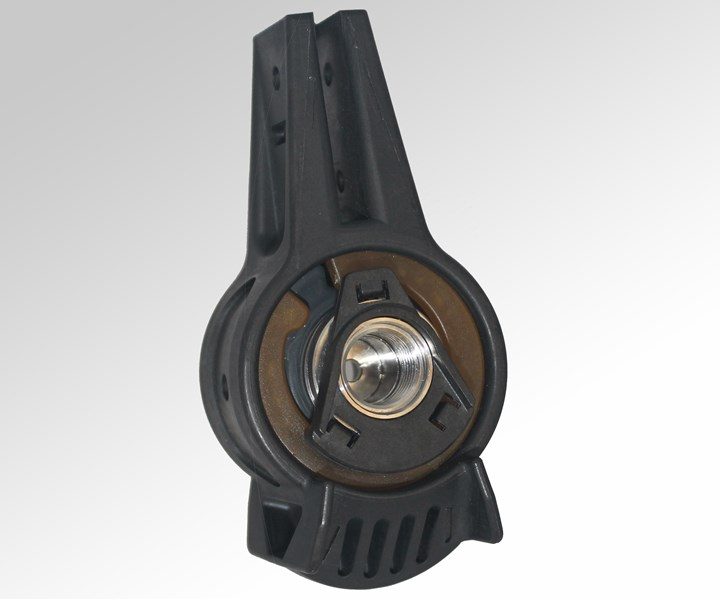
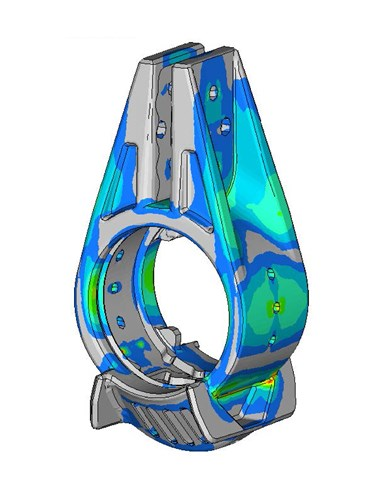
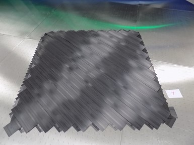
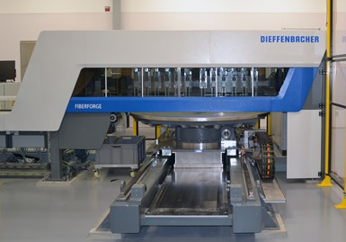
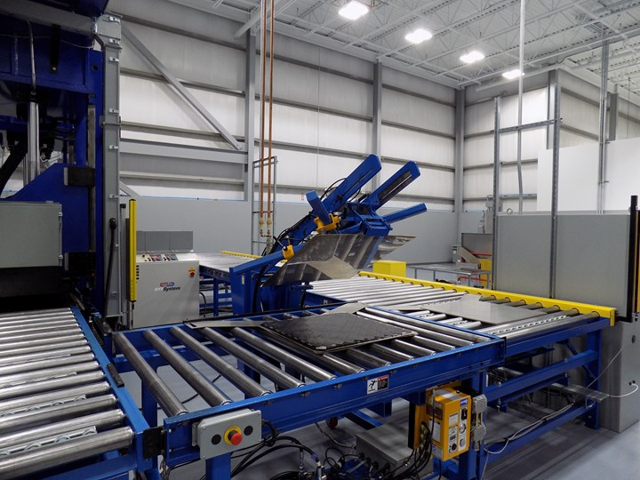
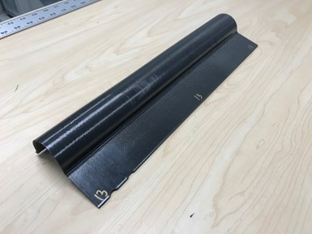
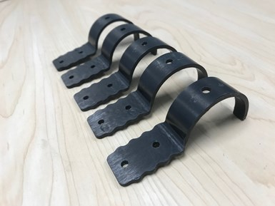
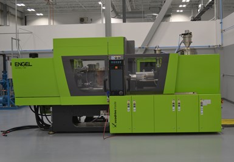
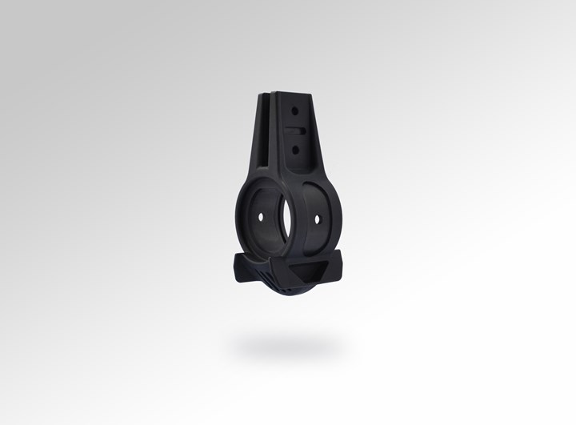

The aircraft luggage compartment B bracket produced by TxV has high strength and complex geometric appearance, all due to Yu uses a mixed-material composite molding process.
Generally, Aerospace Companies are willing to pay more for more suitable composite parts, because they know that such efforts must be rewarded. Because of its light weight, it can reduce fuel consumption; because of its durability, it has a longer service life and can reduce operation and maintenance costs. This perspective of considering issues from the “full life cycle” has opened the door to many end-application markets for composite materials. However, even with the above-mentioned advantages, its disadvantages in cost are obvious. As we all know, under current conditions, the production cost of composite parts is much higher than that of metal materials.
However, this The situation is quietly changing.
by TxV Aero, USA The new composite material automated production technology launched by Composites is tilting the low-cost balance to the composite material side. This technology is called the "mixed material composite molding process."
TxV Aero Composites is a joint venture jointly established by Tri-Mack Plastics Manufacturing in the United States and Victrex in the United Kingdom. Since the advent of the material compound molding process, the goal has been to commercialize mass production. At present, TxV has cooperated with German SFS intec Aircraft Components Company (hereinafter referred to as SFS intec) to abandon the aviation aluminum material that has been used before. After redesigning, it has launched a composite aircraft luggage compartment support product, and has Production capacity. The successful launch of this product shows the application potential of the "mixed material composite molding process" and the VICTREX AE 250 carbon fiber/PAEK unidirectional prepreg product under the brand name VICTREX AE 250 in many aerospace fields. If the production of traditional metal parts is called a "subtractive process", then the production of composite parts can be called an "additive process".
From "subtractive" to "additive"
mechanics often jokingly I am a "scrap making machine", because in the process of processing sheet metal into metal parts, a lot of fragments and scraps are generated. They are either recycled, processed, or immediately put back into production. But no matter which method is adopted, it cannot change the fact of waste, and directly raises production costs. It is said that taking the aircraft luggage compartment aluminum bracket produced by SFS intec as an example, after a series of machining processes, the occurrence rate of scrap is as high as 60%-70%.
because of this The high incidence of scrap is only considered from the perspective of raw materials. Whether it is to produce net-shaped or near-net-shaped stents, the cost of composite materials is lower than that of aluminum. "Although aluminum is cheap, because of the high incidence of scrap, it gives composites an opportunity to be more cost-effective. Especially when the BTF ratio (buy-to-flight ratio) reaches 8:1 (the incidence of scrap is as high as 87.5%) At the time, most of the aluminum purchased was wasted.” TxV’s senior account manager Jonathan Sourkes said, “In addition, from the perspective of production cycle, composite materials are also very advantageous. It can shorten the production cycle from several hours to several. Minutes."
In addition, composite Materials can also give components a complex geometric appearance, so as to meet specific load capacity. This is a goal that cannot be achieved under low-cost conditions for traditional processes. It is envisaged that if chopped fibers are used as raw materials, supplemented by processes such as injection molding that are fast and less manual, the cost of parts produced is lower, but sufficient load capacity cannot be obtained; on the contrary, if continuous fibers are used As raw materials, supplemented by slow speed and frequent manual intervention, the produced parts can obtain sufficient load capacity, but the cost is very expensive.
based on the above contradiction Existence, the composite material industry has invested huge resources in the intention to develop an automated production process that combines high efficiency, low cost, and at the same time can endow parts with higher load capacity, to meet the specific needs of customers in the aerospace field. In this context, after negotiation between Victrex and Tri-Mack,It is our responsibility to promote the aviation application of PAEK-based composite materials, inTxV was formally established in 2017.

Virtual prototype design: without actually producing samples, TxV can lay out and slab orientation Perform repeated verifications until the load capacity meets the design requirements.
launched by TxV The mixed-material composite molding process has two key advantages. One is to realize automatic production of the continuous fiber reinforced part of the component; the other is to make full use of the characteristics of high production efficiency of the injection molding process and realize the complex geometric shape. It needs to be emphasized that in the process of achieving the above goals, TxV first produces laminates that meet the load requirements, and then composites them into molding to achieve their functionalization and give them a final geometric appearance. Sascha Costabel, Director of the Innovation Division of SFS intec, said: “In traditional processes, the high load capacity and complex geometric appearance of parts need to be achieved through a series of operations. Compared with this, the new process introduced by TxV is really a good one. Choose."
Sourkes said, TxV The company regards SFS as an excellent partner: "As a global system accessory product..., SFS has a strong interest in new technologies. They have a spirit of innovation and a strong willingness to invest in new technologies." In addition, SFS intec also maintains close contact with customers in the aviation industry and has certification qualifications. This is very important for redesigned aerospace components.
this aircraft luggage The cabin bracket is also called "B bracket", because it is extremely challenging in design and production, so it was selected as a redesigned aviation accessory product using composite materials. With the help of the finite element analysis tools provided by Altair, after joint engineering design, product conceptual design and model design, the project team started repeated tests and verifications from a sample, and finally proved the success of the model. According to TxV, the key to R&D is to adhere to the concept of "design and serve production" and to make full use of the advantages of continuous fiber automatic tape laying technology and short-cut fiber high-speed injection molding technology.
Production of bracket B
in mixed materials In the molding process, multiple polymer raw materials of the same grade and different types but outstanding characteristics are used. Take B bracket as an example, PAEK is used in conjunction with the continuous fiber reinforced part, and PEEK is used in the outer part of the composite molding. Both PAEK and PEEK products are provided by Vigers, with excellent fatigue resistance, chemical resistance, pyrotechnic toxicity, rapid prototyping and excellent weldability. Among them, VICTREX AE 250 is a low melting point PAEK material (LM PAEK), which has a melting point 40 degrees Celsius lower than PEEK. "When the molten PEEK flows over the surface of the LM PAEK composite material, the two will be better fused together."

when producing bracket B The key raw materials used include: brand name VICTREX AE 250, 2-inch width unidirectional carbon fiber/PAEK prepreg tape (carbon fiber content 58%) and brand name VICTREX PEEK 150CA30 chopped fiber PEEK molding compound (carbon fiber content 30%). After these raw materials are fed into the mixed material composite molding production unit, they are gradually formed through the following steps:
.. step, use the Fiberforge 2000 tape laying system provided by Dieffenbacher to lay carbon fiber/PAEK prepreg tape. "This is one of the fastest tape laying systems in the world," Sourkes said. It can be used in conjunction with a robot to continuously load and lay the prepreg tape. The entire laying process has been rigorously designed to ensure a small porosity between the prepreg tapes. At the same time, before each layer is laid, the previous layer will be re-inspected. The above process is carried out in a tightly controlled environment to ensure that it is not interfered by foreign objects and debris (FOD).

Step 1: Use Dieffenbacher Fiberforge 2000 automatic tape laying machine to produce blanks.
Step two, After the placement is complete, the blanks are sent to the automatic molding unit. First use a set of heated press plates to compact to remove internal pores; then use a set of cold press plates to cool the blank. It is more efficient to adopt such "one cold and one hot" two sets of pressing plates than simply using one set of pressing plates. "The immediate benefit is that the production cycle of parts can be shortened from a few hours to a few minutes." Sourkes said.

Step 2:The blank enters the automatic molding unit, and it is compacted and cooled with two sets of pressing plates, one hot and one cold.
Step three, After compaction, the preform is formed and sent to the next work unit to complete the initial shape of the bracket.

Step 3: The initial shape of bracket B is completed
The fourth step, The preform was cut with a water jet provided by Flow International to produce carbon fiber/PAEK inserts.
"Each project needs to weigh the size of the prefab." Sourkes pointed out, "If the calculation is correct, a piece of prefab can be cut out 3-4 rectangular inserts. This can effectively reduce waste, but will correspondingly extend the working time of waterjet cutting." Take the B bracket as an example, several small inserts can be cut from a preform.

Step 4: Cut the blank with a water jet to cut out the carbon fiber/PAEK inserts. Two such inserts are required on each bracket.
Step five, The high temperature injection molding machine provided by ENGEL is used for compound molding. Place the insert in the cavity of the injection molding machine and inject the molten PEEK. Since the insert is made of PAEK LM, the melting point is low, and the surface part will be tightly combined with the molten PEEK.

Step 5: Use ENGEL high temperature injection molding machine for compound molding
The sixth step, If necessary, the injection molded parts can be machined to a net shape. "Although our goal is to achieve near net shape," Soukers explained, "but in most cases, in order to ensure that the actual geometric appearance and design of the product are accurate, a small degree of machining is required." This part of the operation is usually Use water jet or CNC machining center to complete.

Step 6: Bracket B. Final molding, the production cycle is about 3 minutes, and the BTF value reaches 1.06: 1. Weight loss by 30%-40%.
Breakthrough progress
in bracket B In the production process, the mixed material composite molding process successfully controlled the production cycle to 3 minutes and the BTF value to 1.06:1 (the waste rate was about 5.7%). "Through this technology, raw materials have been fully utilized, and production efficiency has been improved. We provide customers with high value-added thermoplastic composite parts and reduce the design cost of metal parts." The production results show that B bracket The weight of the product has been reduced by 30%-40%, the production cost has been saved by 20%-30%, and its geometric appearance and various parameter performance have reached the level of existing metal parts. "If you give us a chance to completely redesign the component system, the weight reduction rate. The high can reach 60%."
In addition, this The carbon fiber/PAEK/PEEK luggage compartment bracket also effectively reduces the number of components. Previously, the supporting bottom bracket of the bracket was made of PEEK material and fixed on the bottom of the bracket by two rivets. Today, both TxV and SFS have agreed to use the same compound molding process to directly compound and form a bottom bracket at the bottom of the bracket.
Undoubtedly, mixed The success of the material composite molding process is inseparable from the technical support of the two shareholders behind TxV. Sourkes explained that after completing the development of PAEK materials and related processes, Victrex first looked for cooperation opportunities among existing partners. "However, companies with know-how in injection molding often do not have the ability to handle continuous fibers, and companies with continuous fiber processing capabilities often know little about the injection molding process." Constrained by this, the TxV company and the Polyketone Composites Innovation Center were established Prior to this, Victrex and Tri-Mack have conducted cooperative research and development on these two key technologies for many years.
When comparing the mixed-material composite molding process with the traditional process, Soukes said that the traditional process cannot repair the B stent, especially from a cost perspective, which is extremely unfeasible.
First flight certification
With the help of SFS intec With the advantage of certification qualification, both parties have applied for a separate airworthiness certification for this B bracket. "Because the B bracket needs to be mounted overhead, it is easy to reach the rated load during use." Sourkes said, "Especially during the take-off and landing phases, the actual load will be greater." TxV and SFS hope that this component will be able to Fly on the plane in early 2020.
Once airworthy Certification, TxV will start the mass production of the B bracket. Sourkes emphasized that TxV can use its own production lines for production and is also willing to provide technical support to interested potential partners and use their production lines for production.
this B bracket The product is expected to open a broader market for similar composite products. According to forecasts, thousands of brackets and other system accessory products are needed on a civil aviation aircraft. Once composite materials are used, these products will help fly


 To
To


 Current location:
Current location: 
 hot recommendations
hot recommendations